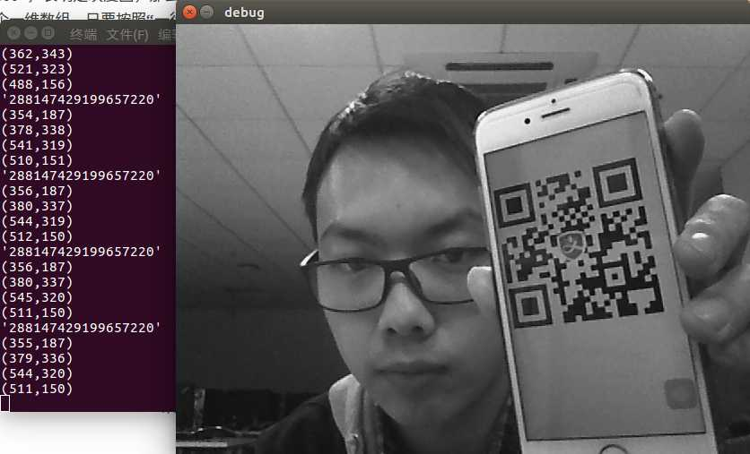

在上一篇《使用Zbar定位、识别二维码》中，我已经能够通过Zbar从一个灰度矩阵中识别出二维码（其实还包括条形码）。这一篇文章要更进一步，通过摄像头不停拍摄图片，然后交给Zbar来识别其中的二维码（如果存在的话）。
在Linux上调用摄像头拍照，我本来想用的是V4L2。但是V4L2实在太复杂了，一时间搞不定，所以转而使用OpenCV。本来对于OpenCV还是有点抵触的，但是自从今天下午用OpenCV寥寥几行代码就实现了摄像头拍摄，我对OpenCV有了新的认识，一下子喜欢多了，大致学完驱动开发就学OpenCV！
=============阶段一：OpenCV调用摄像头============
先上一个OpenCV调用摄像头实时显示图像的程序，非常简单：
opencv_webcam.cpp
#include <opencv/cv.h>
#include <opencv/highgui.h>
int main()
{
//打开0号摄像头，从摄像头中获取视频
CvCapture *capture=cvCreateCameraCapture(0);
//摄像头不存在
if(!capture)
return 1;
//创建窗口，名称为“debug”，自动调整大小
cvNamedWindow("debug",CV_WINDOW_AUTOSIZE);
while(1)
{
//从摄像头中抓取一帧
IplImage* frame=cvQueryFrame(capture);
//在窗口上显示
if(frame)
cvShowImage("debug",frame);
//延时50ms，如果按了ESC就退出
if(cvWaitKey(50)==27)
break;
}
//销毁窗口
cvDestroyWindow("debug");
//释放内存
cvReleaseCapture(&capture);
return 0;
}
要编译这段代码，需要首先安装OpenCV库。很简单：
sudo apt install libopencv-dev
然后就是调用g++编译即可：
g++ opencv_webcam.cpp -o opencv_webcam `pkg-config opencv --libs --cflags opencv`
见证奇迹的时刻到了！运行程序：
./opencv_webcam
非常稳定吧～点击关闭按钮是无法把窗口关掉的，直接按下Esc键就能退出。
==============阶段二：图像灰度化==============
《使用Zbar定位、识别二维码》中提到，Zbar接受灰度矩阵作为输入数据。那么接下来就需要把图像灰度化，然后获得灰度矩阵。
OpenCV中把图片转换为灰度图非常简单，只需要使用函数：
void cvCvtColor(const IplImage* src,IplImage* dst,int code);
比如上面那个例子中，如果要在界面上显示灰度图像，可以这样：
opencv_webcam.cpp
#include <opencv/cv.h>
#include <opencv/highgui.h>
int main()
{
//打开0号摄像头，从摄像头中获取视频
CvCapture *capture=cvCreateCameraCapture(0);
//摄像头不存在
if(!capture)
return 1;
//创建窗口，名称为“debug”，自动调整大小
cvNamedWindow("debug",CV_WINDOW_AUTOSIZE);
//灰度图
IplImage* grayFrame=0;
while(1)
{
//从摄像头中抓取一帧
IplImage* frame=cvQueryFrame(capture);
//图像不为空
if(frame)
{
//如果灰度图没有创建，就创建一个和原图一样大小的灰度图（8位色深，单通道）
if(!grayFrame)
grayFrame=cvCreateImage(cvGetSize(frame),IPL_DEPTH_8U,1);
//原图转灰度图
cvCvtColor(frame,grayFrame,CV_BGR2GRAY);
//显示灰度图
cvShowImage("debug",grayFrame);
}
//延时50ms，如果按了ESC就退出
if(cvWaitKey(50)==27)
break;
}
//释放灰度图
cvReleaseImage(&grayFrame);
//销毁窗口
cvDestroyWindow("debug");
//释放内存
cvReleaseCapture(&capture);
return 0;
}
运行后显示的就是灰度图了：
==============阶段三：OpenCV+Zbar==============
只差最后一步——把OpenCV和Zbar衔接在一起了。由于opencv使用的是C++版本，那么Zbar也用C++版本吧，反倒是看着简单。很简单，直接看代码吧：
opencv_zbar.cpp
#include <opencv/cv.h>
#include <opencv/highgui.h>
#include <zbar.h>
#include <iostream>
using namespace std;
using namespace zbar;
int main()
{
//打开0号摄像头，从摄像头中获取视频
CvCapture *capture=cvCreateCameraCapture(0);
//摄像头不存在
if(!capture)
return 1;
//创建窗口，名称为“debug”，自动调整大小
cvNamedWindow("debug",CV_WINDOW_AUTOSIZE);
//灰度图
IplImage* grayFrame=0;
//创建zbar图像扫描器
ImageScanner scanner;
//配置zbar图片扫描器
scanner.set_config(ZBAR_NONE,ZBAR_CFG_ENABLE,1);
while(1)
{
//从摄像头中抓取一帧
IplImage* frame=cvQueryFrame(capture);
//图像不为空
if(frame)
{
//如果灰度图没有创建，就创建一个和原图一样大小的灰度图（8位色深，单通道）
if(!grayFrame)
grayFrame=cvCreateImage(cvGetSize(frame),IPL_DEPTH_8U,1);
//原图转灰度图
cvCvtColor(frame,grayFrame,CV_BGR2GRAY);
//显示灰度图
cvShowImage("debug",grayFrame);
//创建zbar图像
Image image(frame->width,frame->height,"Y800",grayFrame->imageData,frame->width*frame->height);
//扫描图像，识别二维码，获取个数
int symbolCount=scanner.scan(image);
//获取第一个二维码
Image::SymbolIterator symbol=image.symbol_begin();
//遍历所有识别出来的二维码
while(symbolCount--)
{
//输出二维码内容
cout<<"'"<<symbol->get_data()<<"'"<<endl;
//获取定位点个数
int pointCount=symbol->get_location_size();
//遍历所有定位点
for(int i=0;i<pointCount;i++)
cout<<'('<<symbol->get_location_x(i)<<','<<symbol->get_location_y(i)<<")"<<endl;
//下一个二维码
++symbol;
}
}
//延时50ms，如果按了ESC就退出
if(cvWaitKey(50)==27)
break;
}
//释放灰度图
cvReleaseImage(&grayFrame);
//销毁窗口
cvDestroyWindow("debug");
//释放内存
cvReleaseCapture(&capture);
return 0;
}
没有什么深奥难懂的地方。唯一需要注意的是代码中用红色标记出来的地方。Zbar中，Image构造函数的第三个参数为“Y800”，表明是灰度图，那么第四个参数就是一个灰度矩阵。当然，这里说是矩阵，既可以是一个二维数组，也可以是一个一维数组，只要按照“一行一行”的顺序、每一个像素占用一字节就行了。而恰巧，OpenCV中灰度图也是这个顺序，而且当图片是灰度图时，imageData字段就是这么一个灰度数组。所以直接代入即可。
使用如下命令编译：
g++ opencv_zbar.cpp -o opencv_zbar `pkg-config opencv --libs --cflags opencv` -lzbar
然后运行：
./opencv_zbar
程序运行后，如果在摄像头前摆放一个能够识别的二维码，那么就会不断输出二维码的内容和四个顶点的坐标：
